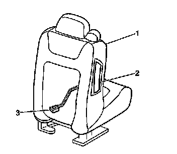

Inflatable Restraint Side Impact Module Wiring Harness Replacement
Inflatable Restraint Side Impact Module Wiring Harness Replacement
Removal Procedure
Caution: Refer to SIR Inflator Module Handling and Storage Caution (SIR Inflator Module Handling and Storage Caution) .
Caution: Refer to SIR Caution (SIR Caution) .
1. Disable the SIR system. Refer to SIR Disabling and Enabling (Service and Repair) for driver seat or SIR Disabling and Enabling (Service and Repair) for passenger seat.
2. Partially remove the seat back panel to access the wiring.

Important: Removal of the right or the left inflatable restraint side impact module wiring harness uses the same procedure.
3. Remove the inflatable restraint side impact module (2) from the seat (1). Refer to Inflatable Restraint Side Impact Module Replacement - Front (Service and Repair) .
With the seat back panel removed, the inflatable restraint side impact module wiring harness (3) will be exposed.
4. Remove the retaining clips that fasten the side impact module wiring harness (3) to the seat (1).
Installation Procedure
1. Install the new side impact module wiring harness (3) to the seat (1).
2. Install the retaining clips that fasten the side impact module wiring harness (3) to the seat (1).
3. Install the side impact module (2) to the seat (1). Refer to Inflatable Restraint Side Impact Module Replacement - Front (Service and Repair) .
4. Install the seat back panel.
5. Enable the SIR system. Refer to SIR Disabling and Enabling (Service and Repair) for driver seat or SIR Disabling and Enabling (Service and Repair) for passenger seat.